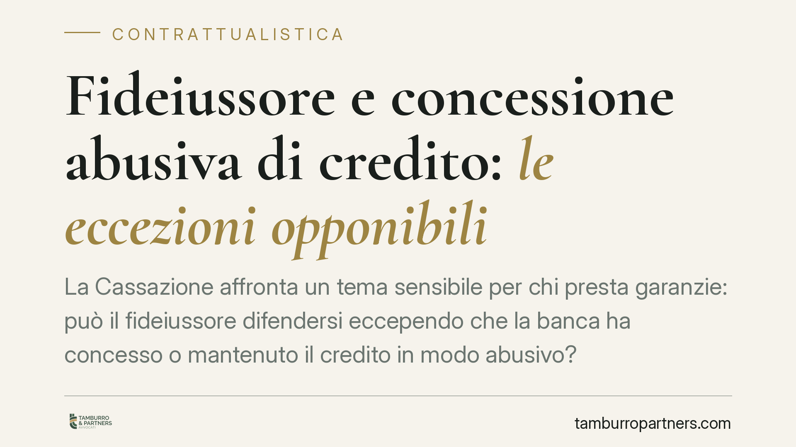

Fideiussore e concessione abusiva di credito: le eccezioni opponibili
La Cassazione affronta un tema sensibile per chi presta garanzie: può il fideiussore difendersi eccependo che la banca ha concesso o mantenuto il credito in modo abusivo? La risposta chiama in causa i rapporti tra responsabilità della banca verso i terzi e le eccezioni opponibili dal garante. Un terreno delicato, dove le distinzioni contano più degli slogan.

Una premessa necessaria sulla fonte
Prima di entrare nel merito, una cautela doverosa. La pronuncia che circola in questi giorni viene indicata con un numero e un anno che, al momento della stesura, non risultano pienamente verificabili sulle banche dati ufficiali. Riportiamo quindi il principio di diritto nel suo valore sistematico, senza citare estremi non confermati. Chi intenda fondare una strategia difensiva su una singola ordinanza deve prima accertarne numero, anno e testo integrale presso fonte ufficiale.
Che cos'è la concessione abusiva di credito
Si parla di concessione abusiva di credito quando la banca eroga, o mantiene in essere, finanziamenti a favore di un'impresa che versa in stato di insolvenza o di grave difficoltà, così alterando la percezione del mercato sulla sua solidità.
Nell'inquadramento classico, questa condotta rileva come illecito aquiliano ex art. 2043 c.c.: la banca risponde verso i terzi (altri creditori, soggetti che hanno contrattato confidando in un'apparenza di solvibilità) per il danno derivante dall'artificioso prolungamento dell'attività d'impresa decotta. È una responsabilità verso l'esterno, non un'eccezione interna al rapporto di credito.
Il passaggio delicato: dall'illecito all'eccezione
Il punto giuridicamente più sottile è proprio questo: una condotta che nasce come fonte di responsabilità civile verso i terzi può diventare un'eccezione che il fideiussore oppone alla banca?
Il ponte è l'art. 1945 c.c., che consente al fideiussore di opporre al creditore tutte le eccezioni che spettano al debitore principale, salvo quelle strettamente personali a quest'ultimo. Il ragionamento è il seguente: se la condotta abusiva della banca ha concorso ad aggravare l'esposizione poi garantita, il garante potrebbe avere interesse a dedurla per contestare, in tutto o in parte, la pretesa.
Si tratta, va detto con franchezza, di un percorso che richiede cautela interpretativa. Non è pacifico che la concessione abusiva integri sempre un'eccezione non personale opponibile ex art. 1945: molto dipende dalla concreta ricostruzione del nesso tra la condotta della banca e l'ampiezza del debito garantito. Chi afferma che si tratti di un principio ormai consolidato semplifica una materia ancora in assestamento.
Fideiussione ordinaria e garanzia autonoma: una differenza decisiva
Qui si gioca una distinzione che non ammette superficialità.
Nella fideiussione ordinaria vale il principio di accessorietà: la garanzia segue le sorti dell'obbligazione principale, e l'art. 1945 apre lo spazio alle eccezioni appena descritte.
Nella garanzia autonoma a prima richiesta (Garantievertrag) il discorso cambia radicalmente. Qui il garante si obbliga a pagare "a semplice richiesta", rinunciando proprio a far valere le eccezioni derivanti dal rapporto principale. L'opponibilità delle eccezioni ex art. 1945 è, in linea di principio, esclusa. Resta un solo varco: l'exceptio doli, l'eccezione di dolo, azionabile quando la richiesta di pagamento sia manifestamente abusiva o fraudolenta.
Stabilire se un contratto sia fideiussione tipica o garanzia autonoma dipende dalle clausole concrete, non dal nome dato dalle parti. È il primo accertamento da fare.
Implicazioni pratiche per chi ha prestato garanzia
Per il garante escusso dalla banca si apre, potenzialmente, uno spazio difensivo. Ma è uno spazio condizionato. L'onere della prova grava su chi eccepisce: occorre dimostrare, con documentazione contabile e bancaria, che il credito è stato concesso o mantenuto in condizioni di conclamata difficoltà del debitore.
Servono quindi elementi concreti: delibere di fido, andamentale del rapporto, segnalazioni e saldi presso la Centrale Rischi, bilanci che documentino lo stato di crisi nel periodo rilevante. Senza questo materiale l'eccezione resta affermazione sfornita di prova.
Valga, da ultimo, un richiamo all'equilibrio: questo orientamento non trasforma ogni fideiussione in un debito automaticamente contestabile. Apre una possibilità, non un automatismo.
Cosa fare in concreto
- Qualificate il contratto: verificate se avete sottoscritto una fideiussione ordinaria o una garanzia autonoma "a prima richiesta", leggendo le clausole, non l'intestazione.
- Ricostruite la cronologia del credito: individuate quando è emerso lo stato di difficoltà del debitore e raffrontatelo con le erogazioni o i rinnovi di fido.
- Acquisite la documentazione: richiedete delibere di affidamento, estratti conto, andamentale e dati di Centrale Rischi, utili a sostenere l'onere probatorio.
- Verificate la fonte giurisprudenziale: non fondate la difesa su una pronuncia prima di averne confermato gli estremi su banca dati ufficiale.
- Valutate tempi e sede: consigliamo di esaminare la strategia prima dell'escussione o, al più tardi, nella fase di opposizione, con il supporto di un professionista.
Contributo informativo a cura di Tamburro & Partners – Avv. Giuseppe Tamburro. Non costituisce parere legale.
Ogni contratto ha il suo equilibrio.
Se vuoi una revisione delle clausole o una redazione su misura, scrivi allo studio. Ti rispondiamo entro un giorno lavorativo.